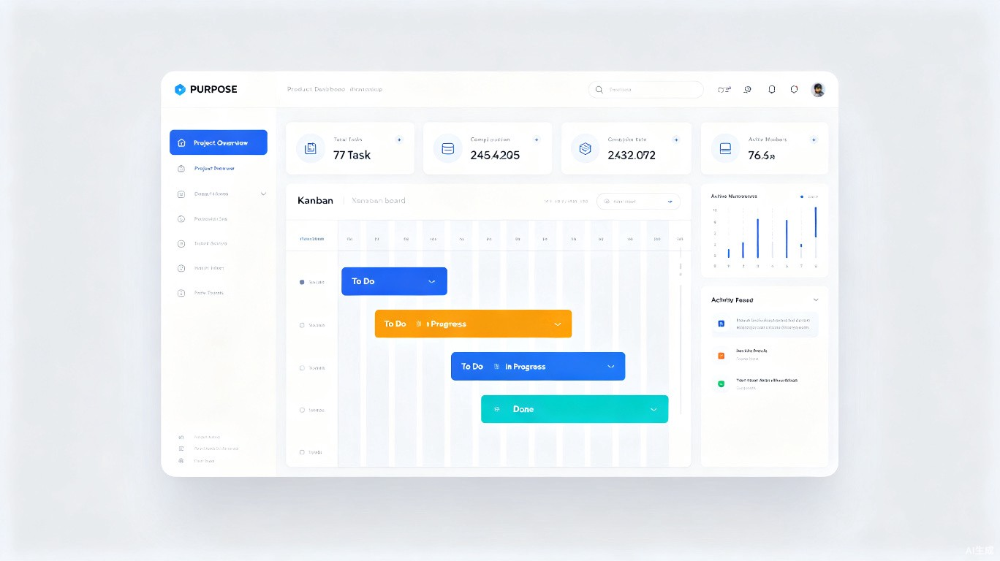
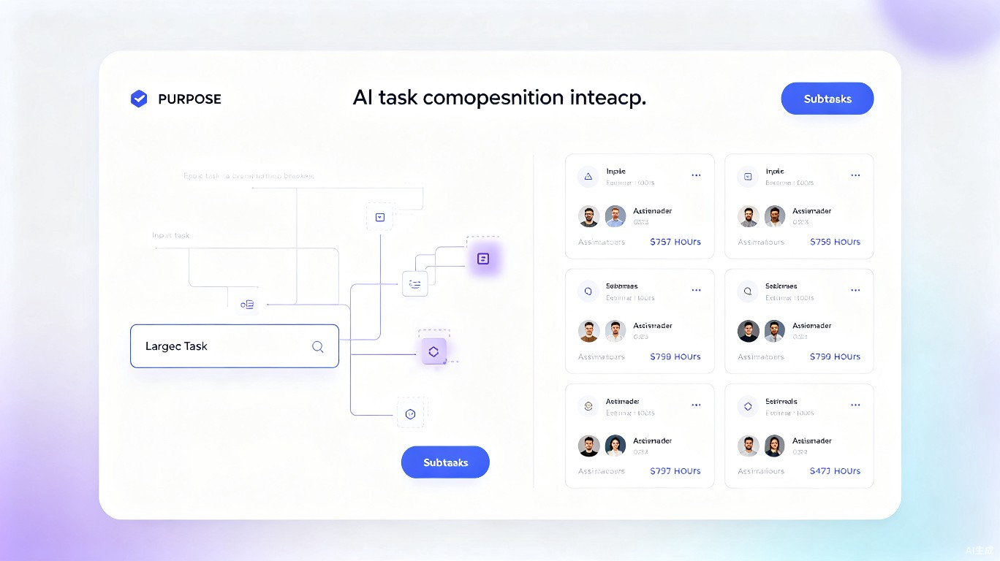
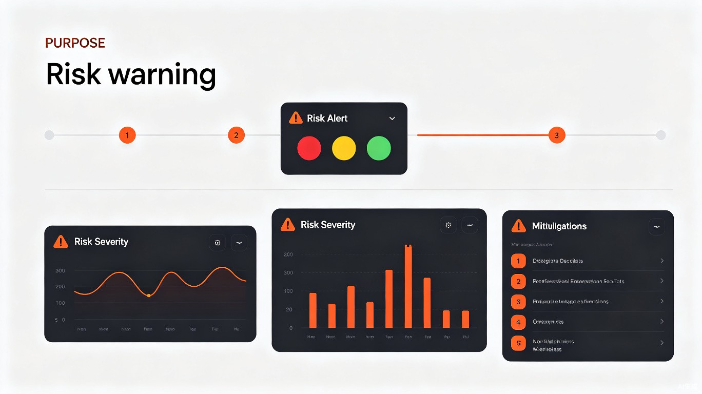
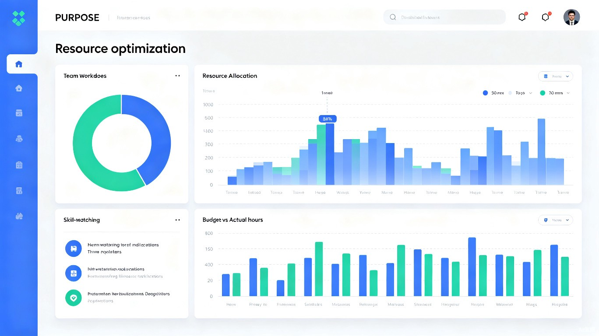
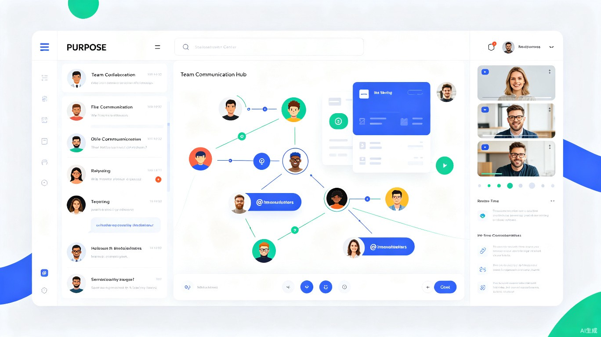

TaskFlow AI 是面向项目管理人员和开发团队的 AI 驱动智能任务管理 Web 应用，通过智能任务分解、进度追踪和风险预警，帮助团队提升 40% 项目管理效率。
效率提升
核心功能模块
智能监控

TaskFlow AI 专为软件开发团队打造，融合人工智能与项目管理最佳实践，解决传统工具中的核心痛点。
面向项目经理、Scrum Master、团队负责人及自由开发者的专业级任务管理工具。
利用先进的人工智能技术，实现任务自动分解、进度预测与风险识别，让管理更科学。
基于历史项目数据与实时进度分析，提供可量化的决策依据，告别经验主义。
从项目启动、日常开发到项目收尾，覆盖项目全生命周期，一站式解决管理需求。
五大核心功能模块，覆盖项目管理的每一个环节，让团队协作无缝衔接。
输入项目需求或 Epic，AI 自动将其拆解为可执行的具体任务，并估算工时、分配优先级，让项目规划从数小时缩短至数分钟。

实时监控项目健康度，通过多维度数据可视化，让项目状态一目了然，提前发现进度偏差。
基于机器学习模型，提前识别项目风险信号，从被动救火转向主动预防，显著降低项目延期概率。

通过分析团队成员技能、负载与历史绩效，AI 提供最优资源分配方案，最大化团队产出效率。

集成即时通讯、文件共享与会议管理，将所有项目沟通集中在任务上下文中，消除信息孤岛。

无论项目处于哪个阶段，TaskFlow AI 都能提供恰到好处的智能支持。
新项目立项时，通过 AI 任务分解快速生成 WBS 与项目计划，自动识别关键路径与里程碑，让项目从一开始就有清晰的方向。
需求分析 · 计划制定每日站会前自动生成进度摘要，实时同步代码提交与任务状态，让团队成员聚焦于开发本身，而非状态汇报。
进度同步 · 状态跟踪自动汇总项目数据，生成复盘报告与知识库沉淀，识别过程中的最佳实践与改进点，为下一个项目积累宝贵经验。
复盘总结 · 知识沉淀跨时区团队的福音，异步沟通与实时状态看板结合，确保无论团队成员身在何处，信息始终同步、决策始终有据。
异步协作 · 跨时区管理现代化的界面设计，兼顾美观与实用性，让每一次操作都流畅自然。
全局项目状态一览，关键指标实时呈现
AI 辅助一键拆解复杂任务为可执行单元
多维度风险识别与智能缓解建议
团队负载均衡与技能匹配可视化
任务上下文中的即时沟通与文件协作
直击项目管理中的核心难题，用数据与智能驱动团队效能跃升。
任务划分颗粒度不均，责任边界模糊，导致推诿与重复劳动。
依赖人工汇报更新，状态信息滞后，问题发现时往往已难以挽回。
沟通散落在邮件、IM、会议中，关键决策难以追溯，新人上手成本高。
依赖主观经验判断，无法量化团队产能与项目健康度，复盘流于形式。
自然语言输入即可生成结构化任务，自动匹配最佳执行人与优先级。
自动聚合多源数据，燃尽图、累计流图实时更新，偏差即时预警。
所有沟通围绕任务展开，信息结构化沉淀，支持快速检索与追溯。
基于历史数据预测项目走向，量化风险与资源利用率，让决策有据可依。
加入数百个高效团队的行列，让 TaskFlow AI 成为你项目成功的智能伙伴。